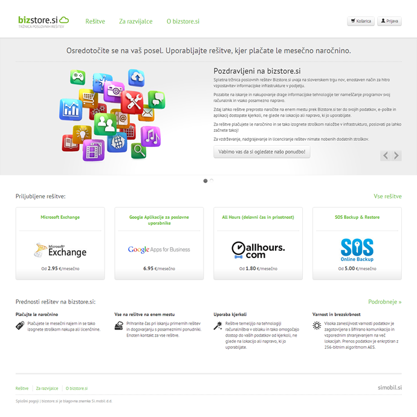
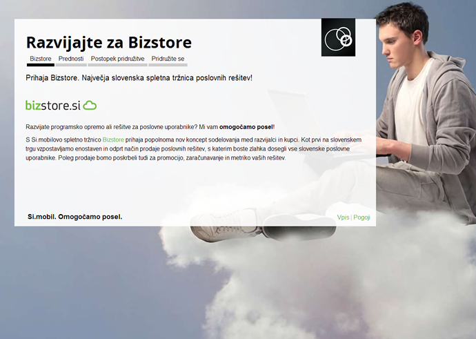
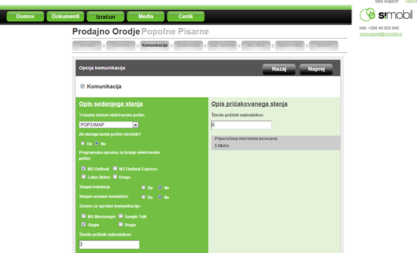

About me
Hello, my name is Erika and I am a software engineer specialized in web development. I use Python, Django, JavaScript, latest web and mobile HTML5 / CSS3 technologies to build dynamic web applications that will excite everyone.
I decided to put this page together for several reasons, first and foremost being to tell a story about myself. You will see that my story is somewhat out of ordinary. Secondly, I would like to present my previous work and by that attract more “work” in future. In other words, it talks to you all – my potential employers. Lastly, this page is for me. If by any reason I will need to look down the memory lane someday, I can use the page to recall my personal growth and development.
In the next section you will find my short biography followed by my projects section. In a case you need to access my CV, the link is on the right.
My story
My education was somewhat out of the ordinary for an engineer. I actually started out as a student in a beauty school, training to be a hairdresser, but I ended up graduating in computer science and working as a software engineer.
From childhood on I was always sitting behind computer (whenever I could or my mum did not need it for her work) and fiddle with it for hours on end, but as a young girl I had never thought about working with computers as a profession, since it was considered a male domain. Looking back, I do not know how I or anyone else did not see this possibility. So I did finish that beauty school with honors, but I never went on to practice the trade, as I did not feel “at home” with it. After finishing it, I was working within many professions from sales to accounting (my mum was an accountant, so I thought it would make sense). All of the people that I have been working with during that time, thought me among many other things that it is important to know yourself, find what you like to do and go for it, no matter what. However, before I would even think about enrolling at any university, I had to have much better foundation of knowledge than what beauty school gave me. Therefore, I did finish not one, but two more educational programs (sales and economics) in preparation for university even if back then I still did not exactly know what my studies would be. In the middle of first program, I realized that computer science is my passion, even if back then I did not even know exactly what it is. I enrolled in the faculty of computer science in Ljubljana and graduated with honors, despite of everyone but my mum (she had thought me to take on “the impossible”) was trying to convince me that I would have never been able to make it. I guess they were trying to protect me, best way they knew how, so I never took it as a bad thing.
Now I love what I do and furthermore I am very excited about what lays ahead of me. Currently I work at a start-up, which had developed a cloud brokerage platform. They inspire to expand to foreign markets. As a software engineer, I am blessed to work with amazingly smart people, who are sharing their gained knowledge and years of experience with me every day. We are working with Python programming language and using Django as a web framework. Since my background was Java I was excited to learn new language, just to realize that it is actually not only super-efficient but super fun as well. I did meet some of the community at my first Python conference at EuroPython 2012 in Florence, which inspired me to know more. I also regularly go to Django or Python meet ups in my town, but as we are a tiny country even community is tiny, but pleasant nevertheless.
My projects
www.bizstore.si
URL: www.bizstore.si
Running: from July 2012 until present.
Overview:
The web site has been built according to the requirements of a telecom company, which had recently entered cloud brokerage market. The goal was to provide a commodity-like marketplace to SMEs (small and medium enterprises). Application offers ordering and managing of those services, thus providing easy access for customers. The web site was released to general public in September 2012; additional features are still under development.
Features:
- Social login as well as custom login forms. User profile is connected to Django auth user module and which is connected to the cloud services gateway. Social login is implemented with the third party component (janrain),
- Products and services are listed in hierarchical categories,
- Product information can be easily added in admin application,
- Price lists are automatically generated for a range of available products and services,
- Shopping cart includes order procedure which contains four steps. For better user experience we included jQuery into the application for the purpose of dynamically calculating prices on the spot,
- Customer is also provided with messaging system, to enable communication between technical stuff and themselves from application directly, but at the same time connecting to telecom CRM,
- Web site is integrated with Google Analytics,
- Web site is responsive, i.e. it works on desktop browsers as well on mobile phones and tablets.
Some of the implementing details and technologies:
Web application runs on AWS EC2 instances where it is deployed with fabric library into development, integration and production environments. It was built with a Django 1.3 framework. Schema and data migrations are managed with third party application south. Django application mptt was used to create a hierarchy of web pages (a simple CMS for product pages and information). For improving web page load performance, we used django_compressor. We also used HTML5, CSS3, LESS, jQuery, crispy-forms.
My role:
I was involved in the project from the start, as a developer and front-end expert (HTML5, CSS3, and JavaScript). We started with a general idea, small set of mockups and provisional design of various web elements. From there on I implemented the large part of the site and provided solutions to many requirements like the logic of how shopping cart or how support processes like communication with customer will work. I also implemented a web responsive design so that the site could be used not only on desktop browsers but also on mobile phones and tablets. I also tested the site on all major browsers and platforms. A lot of the code is also covered by unit tests.
Code snippet from the application: generating web page
urls.py view
Home page screenshot: 
Developers.simobil.si
Running: from end of May 2012 until June 2012.
Overview:
This was a short project build "on the fly" for a telecom company (Simobil.si). They wanted to attract prospective developers onto their cloud offering.
Features:
- Social login was implemented with the use of django-openid-auth library forked from Jannis Leidel's repository, where we added some specific features,
- Prospective developers can fill forms to submit their applications for review and receive information about terms, policies and integration requirements.
Some of the implementing technologies:
Django, HTML5, CSS3, Twitter Bootstrap (CSS and JavaScript library), LESS
My role:
I implemented the Django application. The design was provided by our customer.
Home page screenshot: 
POPP – custom CRM
No public URL.
Running: from November 2011 until April 2012, features are still being added regularly.
Overview
Custom web based CRM used to bootstrap selling of cloud products and services by a telecom company. Their main users are sales people, technology consultants, support stuff and technicians.
Features:
- Provide a list of products and prices; current portfolio includes around 50 or more different products and services (including features),
- Provides a list of accounts, quotes, orders and customers current setup,
- Quotes can be generated in PDF format so that it can get sent directly to clients mail from within the application,
- Dynamic cost comparison calculator, built with KnockoutJS framework,
- Domain availability lookup to get quick feedback on available domain names,
- Promotional material is stored in AWS S3 bucket, available for downloading at any time, uploaded from the front end by site administrators,
- Messaging sub-system that connects technical and supports staff as well to provide tracking and history,
- Analytics subsystem provides monitoring and charting functionality (using Google Charts).
Some of the implementing technologies:
Python – Django, AWS EC2, SES, fabric, south, uni_form, mptt, Google Charts, pisa HTML to PDF conversion
My role:
I designed the web application as a custom theme based on Twitter bootstrap. I implemented a large part of the web applications including account handling, creation of quotes (including custom product specifics), PDF generation and various tools like domain name availability, cost comparison tool, messaging and analytics sub-systems. I still maintain the web application (adding new products, features, prices, implementation of quote editor specifics, etc.).
Code snippet for domain availability connector:
Screenshots:
Sales app
No public URL.
Running: from June 2011 until October 2011.
Overview:
A simple web application used to help assessing a potential for a new product line for a telecom company. Since they wanted to enter the new market and had previously no experiences with selling cloud based services, they were able to record potential customers with this application. It implemented a simple wizard with a series of questions. It also provided a cost-comparison tool.
Technologies used:
Django 1.3, JavaScript, jQuery, HTML5, CSS3, LESS
My role:
I undertook this project as a first task with my current employer. Web application had few back end services written with Django framework: such as serving pages and static content, assembling data and pushing it to views. Everything else was made as a dynamic client-side web application using jQuery. This application was later dropped as we had a first version of POPP implemented.
Screenshot: 
Freelance projects
- Web page built with Joomla CMS, for a daycare center. URL: vrtecobgozdu.si
- Web page built with AS3 in Flash, for a interior design company. URL: dzynrdesigns.com
- Web application built as a PHP Joomla component, for beauty salons, to manage schedules and enabling clients to make appointments online. URL: unfortunately, site is no longer available.